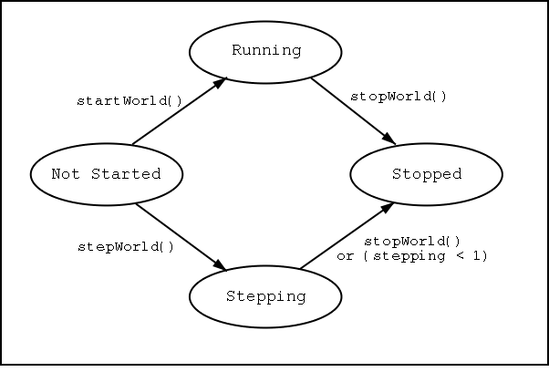

This document provides information about the implementation of the blocks program. The flow of this document roughly follows that of the Design Documentation. So you might be able to read a section in the design document and then look here to see how the function is implemented.
Overview
The Blocks system is implemented in the Java programing language. It is currently being developed in a Linux environment, using a Unix "makefile."
Directory Structure
The directory structure looks like this:
/home/mike/Projects/Evolution/Blocks
This is the main blocks program directory. It contains the following
subdirectories:
Attributes - Contains Java code specific to a particular type
of block "decision making."
Networks - Contains code for things like running different
kinds of "weighted" networks. Will probably be moved
out of the blocks directory structure at some point.
Documentation - This is where all the documentation is. There are
subdirectories for each Version of the system.
Versions - This contains snapshots of different versions of the
system. The idea is that a "version" contains everything
you would need to re-build that specific version of
the code. Including all the required files from *outside*
the blocks system proper.
/home/mike/Projects/Java
This directory contains libraries that are used in the blocks system as
well as elsewhere.
The main Blocks directory contains the makefile and various ancillary files, scripts, and so on. But mainly it is intended to contain all the java code that is both unique to the Blocks system and common to all "versions" of blocks.
Code that is related to a particular type of decision making should be kept in the Attribute subdirectory. Code that is not unique to the Blocks program should be in some other subdirectory. (An example of this is the Networks subdirectory. This contains code that is actually general purpose, and will probably be moved completely out of the Blocks directory structure at some point.)
Build Process
Typing: make all in the main blocks directory should completely rebuild blocks and any other related programs. Programs end up being .jar files. So, for example, you end up with a file called "blocks.jar" as a result of the build. This file would be run by saying: java -jar blocks.jar
Before the jar file is created, a copies of all classes used are placed in the main blocks directory. They are added to the jar file from there. So, there is no directory hierarchy within the jar file, and no classpath statements needed.
Basic System Objects
TBD
Starting and Stopping the World
 Above is a diagram of the World's run states. There are potential race condintions when other threads (like the CommandWindow) start and stop the world. The methods startWorld(), stepWorld(), and stopWorld() are used to transition the world between states. Whenever you use one of these methods, wait until the world's getRunState() method indicates that the world has completed the transition, before executing any logic that assumes the world has reached the desired state.
Turns and Moves
TBD
Decision Making vs Basic Constraints
TBD
The Decision Making Process
The decision making process is always located in the "DecisionProcedure" object. Currently I am working on a subclass of DecisionProcedure called DP4, which will implement the process described in the related section of the Design Documenation. Here is how it works:
Implementation TBD.
Implementation TBD.
Implementation TBD.
Implementation TBD.
Implementation TBD.